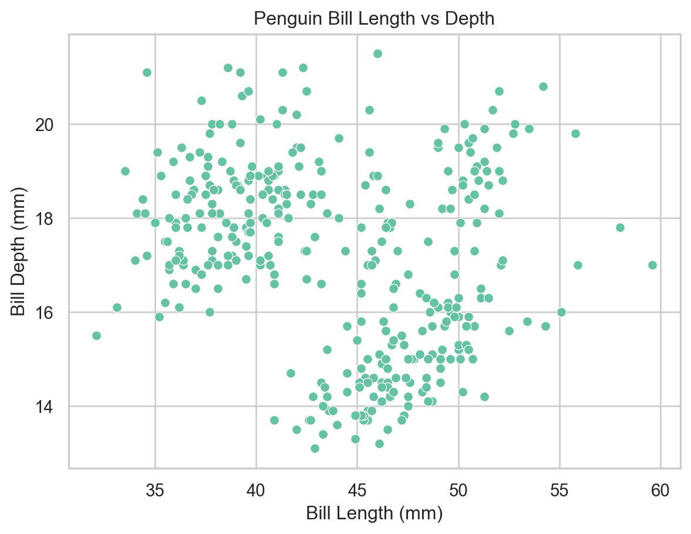
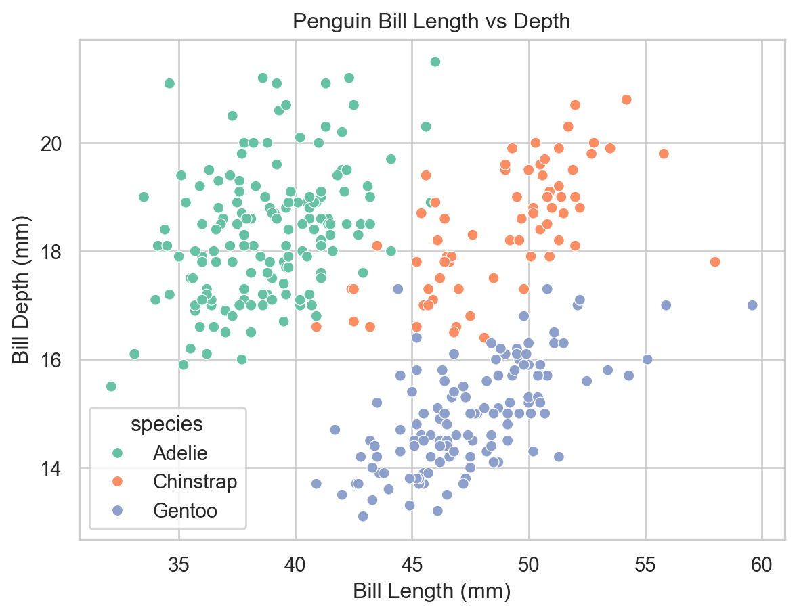
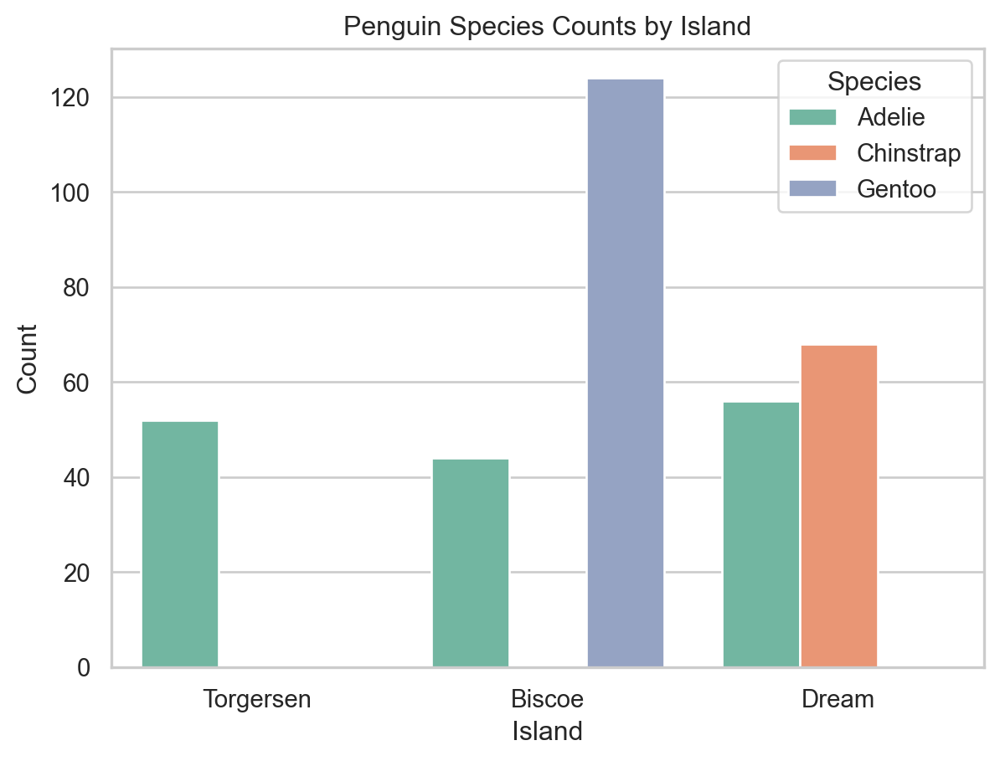
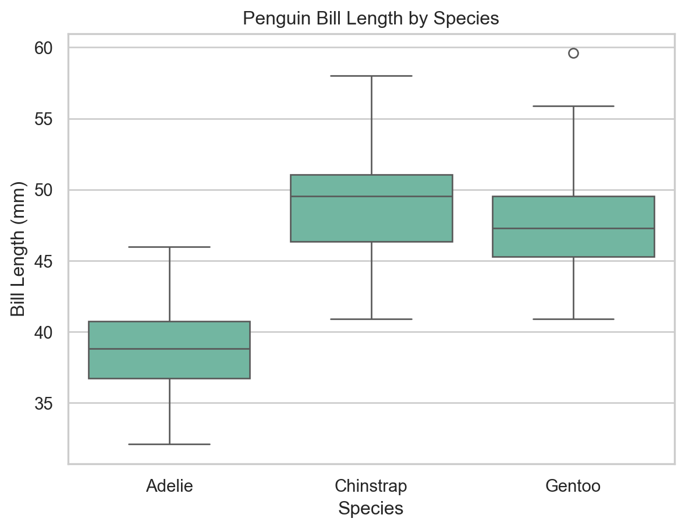
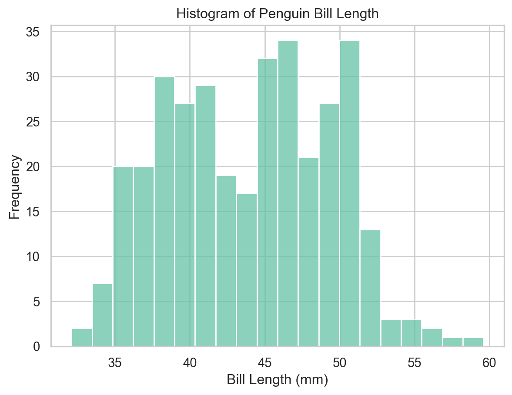
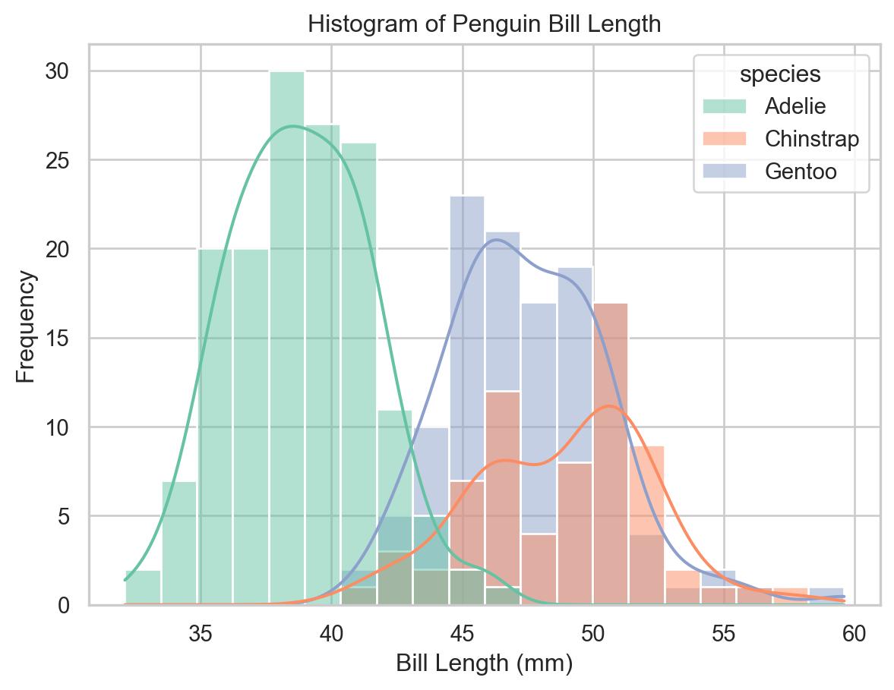
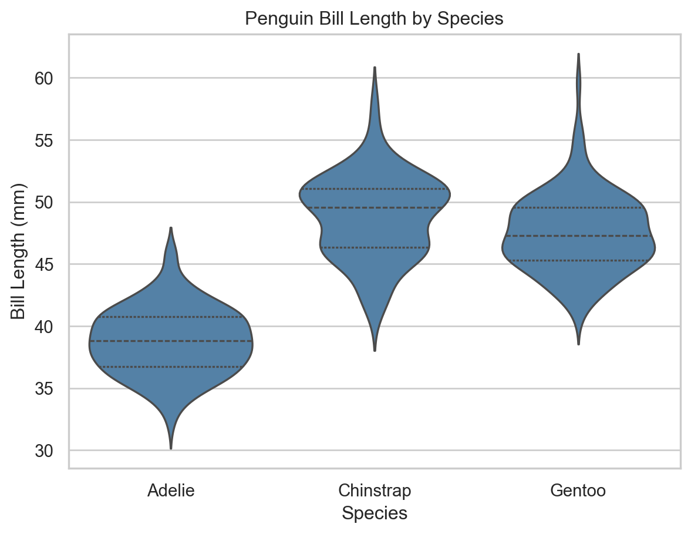

Standard visualizations for EDA, matplotlib and seaborn fundamentals, variable-based formatting, and multiplotting with FacetGrid.
Author
John Robin Inston
Published
May 6, 2026
Modified
May 6, 2026
ImportantLearning Objectives
Understand what exploratory data analysis (EDA) is and how visualization supports it.
Know which plot types to use for univariate, bivariate, and grouped data.
Produce scatter plots, bar plots, histograms, box plots, and violin plots in matplotlib and seaborn.
Apply variable-based formatting (color, shape, size) to encode additional dimensions.
Create multiplots using matplotlib subplots and seaborn FacetGrid.
Exploratory Data Analysis
What is EDA?
After acquiring and preparing data, the next step in the data science lifecycle is exploration.
ImportantExploratory Data Analysis (EDA)
Exploratory Data Analysis (EDA) is the process of analysing and visualising data to understand its structure, identify patterns, and uncover insights.
EDA typically follows three steps:
Univariate analysis — understand the distribution of individual variables.
Multivariate analysis — explore relationships between variables.
Insight development — form hypotheses to inform modelling and deeper analysis.

EDA Workflow
A key tool throughout EDA is data visualization. Python’s standard library does not include a full visualization system, so we use dedicated libraries: matplotlib, seaborn, altair, and plotly.
Why Visualize Data?
Visualization helps to:
Improve interpretability of data.
Identify patterns and relationships that are not obvious in raw tables.
Communicate findings effectively to an audience.
Explore data in an interactive way.
Aim for visualizations that are:
Novel — contribute something beyond a plain table.
Informative — answer a specific question.
Efficient — convey the message with minimum ink.
Aesthetic — clear and visually appealing.
Always ask yourself: what is this visualization for? What is it contributing?
Types of Visualization
Typically we wish to produce visualizations for two main reasons:
Exploratory visualizations — created quickly during analysis to understand the data; not necessarily polished.
Presentation visualizations — used to communicate findings; refined with a focus on clarity and aesthetics.
Furthermore, we can categorize visualizations by their level of interactivity:
Static — fixed images; no user interaction.
Interactive — allow zooming, filtering, and hovering for detail.
Animated — show changes in data over time or across conditions.
Visualization Libraries
matplotlib
The foundational visualization library in Python. Almost every other library — including seaborn — is built on top of it.
Imperative interface: total control over all plot details, but often verbose for common plots.
Strong for fine-grained customization and publication-style figures.
We use the object-oriented interface (fig, ax = plt.subplots()), which is more flexible than the pyplot state-based interface.
seaborn
A declarative statistical visualization library built on top of matplotlib, similar to ggplot2 in R.
Creates common statistical visualizations with much less code.
Provides useful defaults for themes, color palettes, and grouped comparisons.
Well suited for EDA and rapid iteration.
Standard Visualizations
We use the penguins dataset from seaborn, which contains measurements of penguins from three species: Adelie, Chinstrap, and Gentoo.
A scatter plot pairs two continuous variables to visualise their relationship. We can produce a scater plot in matplotlib by calling ax.scatter() on an axis object:
Scatter plot of bill length vs bill depth (matplotlib).
We can produce the same plot in seaborn with less code by calling sns.scatterplot():
sns.set_theme(style="whitegrid", palette="Set2")ax = sns.scatterplot( x="bill_length_mm", y="bill_depth_mm", data=penguins)ax.set( xlabel="Bill Length (mm)", ylabel="Bill Depth (mm)", title="Penguin Bill Length vs Depth")plt.show()

Scatter plot of bill length vs bill depth (seaborn).
Variable-Based Formatting
To examine the influence of a third categorical variable, we can map it to the color (hue), shape (style), or size (size) of points.
ax = sns.scatterplot( x="bill_length_mm", y="bill_depth_mm", data=penguins, hue="species")ax.set( xlabel="Bill Length (mm)", ylabel="Bill Depth (mm)", title="Penguin Bill Length vs Depth")plt.show()

Scatter plot colored by species (seaborn).
Bar Plots
A bar plot represents categorical data with rectangular bars whose lengths are proportional to the values they represent. They are commonly used to show counts or proportions across categories.
In matplotlib, we need to pre-aggregate the data before plotting.
To compare across two categorical variables, use the hue parameter to split each bar into subgroups.
ax = sns.countplot(x="island", hue="species", data=penguins)ax.set(xlabel="Island", ylabel="Count", title="Penguin Species Counts by Island")ax.legend(title="Species")plt.show()

Species counts by island with subgrouping by species (seaborn).
Box Plots
A box plot (box-and-whisker plot) displays the distribution of a continuous variable using the five-number summary: minimum, Q1, median, Q3, and maximum. Outliers are shown as individual points.
ax = sns.boxplot(x="species", y="bill_length_mm", data=penguins)ax.set( xlabel="Species", ylabel="Bill Length (mm)", title="Penguin Bill Length by Species")plt.show()

Box plot of bill length by species (seaborn).
Histograms
A histogram groups continuous data into bins and represents the frequency of observations in each bin as a bar height.
ax = sns.histplot(x="bill_length_mm", data=penguins, bins=20)ax.set(xlabel="Bill Length (mm)", ylabel="Frequency", title="Histogram of Penguin Bill Length")plt.show()

Histogram of bill length (seaborn).
Histograms with Kernel Density Estimates
Setting kde=True overlays a kernel density estimate (KDE) — a smooth approximation of the distribution. Combined with hue, we can compare distributions across groups in a single plot.
Note
Histogram shape depends on bin count and KDE smoothness depends on bandwidth. Use these as exploratory summaries rather than definitive descriptions of the distribution.
ax = sns.histplot( x="bill_length_mm", data=penguins, bins=20, kde=True, hue="species", multiple="layer")ax.set(xlabel="Bill Length (mm)", ylabel="Frequency", title="Histogram of Penguin Bill Length")plt.show()

Histogram with KDE curves by species (seaborn).
Violin Plots
A violin plot combines a box plot with a KDE, providing a richer view of the distribution’s shape, central tendency, and spread.
ax = sns.violinplot( x="species", y="bill_length_mm", data=penguins, inner="quartile", color="steelblue")ax.set( xlabel="Species", ylabel="Bill Length (mm)", title="Penguin Bill Length by Species")plt.show()

Violin plot of bill length by species (seaborn).
More Advanced Visualizations
Creative Combinations
Don’t treat plot types as rigid categories — effective visualizations often layer multiple geometries. For example, overlaying individual data points on a box plot reveals both the summary statistics and the raw distribution.
Per-species scatter plots using matplotlib subplots.
Facet Grids with seaborn
sns.FacetGrid() produces the same result with far less code. It creates a grid of subplots defined by the unique values of one or more categorical variables; g.map() applies a plotting function to each facet.
g = sns.FacetGrid(penguins, col="species", height=4, aspect=1)g.map(sns.scatterplot, "bill_length_mm", "bill_depth_mm", color="steelblue", alpha=0.95, s=7, marker="D")g.set_axis_labels("Bill Length (mm)", "Bill Depth (mm)")g.fig.subplots_adjust(top=0.8)g.fig.suptitle("Penguin Bill Length vs Depth by Species")plt.show()
Per-species scatter plots using seaborn FacetGrid.
FacetGrid is particularly powerful for EDA because it scales to many groups with no additional code — simply change the col, row, or hue arguments.